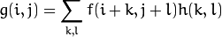
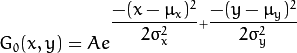

Перекладено українською: Арсеній Чеботарьов, Ніжин 2015. ac2epsilon@gmail.com
Згладжування зображень
Ціль
В цьому туторіалі ми навичимось, як застосовувати різні лінійні фільтри для згладжування зображень з використанням функцій OpenCV, таких як:
Теорія
Зауваження
Пояснення нижче належить до книжки Комп'ютерне бачення: алгоритми за застосування від Richard Szeliski та з LearningOpenCV
-
Зглажування, що також називається розмиття, є простою та часто застосовуваною операцією з зображеннями.
-
Є багато причин для зглажування. В цьому туторіалі ми сфокусуємось на згладжуванні для зменшення шуму (інші використання будуть показані в наступних туторіалах).
-
Щоб виконати операцію згладжування ми застосуємо фільтр до нашого зображення. Найбільш загальним типом фільтрів є лінійний, та вихідні значення пікселів визначаються як сума зважених значень вхідних пікселів: 

 Матриця називається ядром, що
є нічого іншого, ніж коефіцієнти фільтра.
Матриця називається ядром, що
є нічого іншого, ніж коефіцієнти фільтра.Це дозволяє візіалізувати фільтр як вікно коеффіцієнтів, що сковзить по зображенню.
-
Є багато типів фільтрів, тут ми зазначимо тільки найбільш уживані:
Фільтр нормальзованого квадрату
-
Цей фільтр є найпростішим з усіх! Кожний піксель є очікуванням від сусідей по ядру (всі вкладаються з рівними вагами)
-
Ядро таке:

Гаусівський фільтр
-
Можливо найбільш корисний фільтр (хоча і не найшвидший). Гаусівське фільтрування виконується обробкою кожного пікселя у вхідному масиві гаусівськім ядром, та потом підсумомуванням їх для отримання вихідного масиву.
-
Тільки щоб зробити речі прозорішими, запам'ятайте, на що схоже одновимірне гаусівське ядро.


Вважаючи, що зображення 1D, ви можете помітити, що розташування пікселів в середині буде мати найбільшу вагу. Вага сусідей занепадає по мірі зростання відстані він них до центрального пікселя.
Зауваження
Запам'ятайте, що гаусіанівська функція в 2D представлена наступним чином:

де мю означає пік, а омега варіативність для кожного ікс та ігрек.
Медіанний фільтр
Медіанний фільтр пробігає по кожному елементу сигналу (в даному випадку зображенню) та замінює кожний піксель на медіану сусідніх пікселів (розташованих в квадраті кругом обчислюваного пікселя).
Білетеральний фільтр
- Ми вже пояснили декілька фільтрів, чия головна мета згладити вхідне зображення. Однак, іноді фільтри не тільки прибирають шум, але такоз згладжують краї. Щоб запобігти цьому (щонайменьше в деякій мірі), миможемо застосувати білетеральний фільтр.
- По аналогії з гаусівськім фільтром, білатеральний фільтр також приймає до уваги сусідні пікселі, з вагами до кожного з них. Ці ваги мають два компоненти, перший з яких такий же самий, що і в гаусівському фільтрі. Другий компонент приймає до уваги різницю між сусідніми пікселями, та обчислюваним пікселем.
- Для детального пояснення ви можете скористатись цім посиланням
Код
-
Що робить ця програма?
- Завантажує зображення
- Застосовує 4 різні типи фільтрів (пояснено в Теорії) та відображує відфільтровані зображення послідовно
-
Код для завантаження: Клацніть тут
-
Код більш детально
#include "opencv2/imgproc/imgproc.hpp"
#include "opencv2/highgui/highgui.hpp"
using namespace std;
using namespace cv;
/// Глобалні змінні
int DELAY_CAPTION = 1500;
int DELAY_BLUR = 100;
int MAX_KERNEL_LENGTH = 31;
Mat src; Mat dst;
char window_name[] = "Filter Demo 1";
/// Заголовки функцій
int display_caption( char* caption );
int display_dst( int delay );
/**
* функція main
*/
int main( int argc, char** argv )
{
namedWindow( window_name, CV_WINDOW_AUTOSIZE );
/// Завантажити джерело зображення
src = imread( "../images/lena.jpg", 1 );
if( display_caption( "Original Image" ) != 0 ) { return 0; }
dst = src.clone();
if( display_dst( DELAY_CAPTION ) != 0 ) { return 0; }
/// Застосовуємо гомогенние розмиття
if( display_caption( "Homogeneous Blur" ) != 0 ) { return 0; }
for ( int i = 1; i < MAX_KERNEL_LENGTH; i = i + 2 )
{ blur( src, dst, Size( i, i ), Point(-1,-1) );
if( display_dst( DELAY_BLUR ) != 0 ) { return 0; } }
/// Застосовуємо гаусівське розмиття
if( display_caption( "Gaussian Blur" ) != 0 ) { return 0; }
for ( int i = 1; i < MAX_KERNEL_LENGTH; i = i + 2 )
{ GaussianBlur( src, dst, Size( i, i ), 0, 0 );
if( display_dst( DELAY_BLUR ) != 0 ) { return 0; } }
/// Застосовуємо медіанне розмиття
if( display_caption( "Median Blur" ) != 0 ) { return 0; }
for ( int i = 1; i < MAX_KERNEL_LENGTH; i = i + 2 )
{ medianBlur ( src, dst, i );
if( display_dst( DELAY_BLUR ) != 0 ) { return 0; } }
/// Застосовуємо білітеральний фільтр
if( display_caption( "Bilateral Blur" ) != 0 ) { return 0; }
for ( int i = 1; i < MAX_KERNEL_LENGTH; i = i + 2 )
{ bilateralFilter ( src, dst, i, i*2, i/2 );
if( display_dst( DELAY_BLUR ) != 0 ) { return 0; } }
/// Очікуємо коли користувач натисне клавішу
display_caption( "End: Press a key!" );
waitKey(0);
return 0;
}
int display_caption( char* caption )
{
dst = Mat::zeros( src.size(), src.type() );
putText( dst, caption,
Point( src.cols/4, src.rows/2),
CV_FONT_HERSHEY_COMPLEX, 1, Scalar(255, 255, 255) );
imshow( window_name, dst );
int c = waitKey( DELAY_CAPTION );
if( c >= 0 ) { return -1; }
return 0;
}
int display_dst( int delay )
{
imshow( window_name, dst );
int c = waitKey ( delay );
if( c >= 0 ) { return -1; }
return 0;
}
Пояснення
-
Давайте перевіримо функції OpenCV, що включають процедуру згладжування, тому що решту ви вже знаєте.
-
Нормалізований блочний фільтр:
OpenCV пропонує функцію blur для виконання згладжування за допомогою цього фільтру.
for ( int i = 1; i < MAX_KERNEL_LENGTH; i = i + 2 ) { blur( src, dst, Size( i, i ), Point(-1,-1) ); if( display_dst( DELAY_BLUR ) != 0 ) { return 0; } }
Ми задаємо чотири аргументи (за додатковими деталями посилайтесь на документацію):
- src: Первинне зображення
- dst: Цільове зображення
- Size( w,h ): Визначає розмір ядра, що буде використовуватись (ширирою w пікселів, та висотою h)
- Point(-1, -1): Вказує, де розташована крапка прив'язки (обчислюваний піксель) відносно до сусідей. Якщо це негативне значення, тоді точка прив'язки знаходиться в центрі ядра.
-
Гаусівській фільтр
Він виконується за допомогою функнції GaussianBlur :
for ( int i = 1; i < MAX_KERNEL_LENGTH; i = i + 2 ) { GaussianBlur( src, dst, Size( i, i ), 0, 0 ); if( display_dst( DELAY_BLUR ) != 0 ) { return 0; } }
Ми використовуємо чотири аргумента (за додатковими даними звертайтесь до документацїі OpenCV):
- src: Первинне зображення
- dst: Цільове зображення
- Size(w, h): Розмір ядра, що буде використано (сусіди, що прийматимуть участь), має бути непарним позитивним числом, інакше розмір буде обчислюватися на основі аргументів стандартного відхилення.
 : Стандартне відхилення по x.
Нуль означає, що параметр обчислюється на основі
розміру ядра.
: Стандартне відхилення по x.
Нуль означає, що параметр обчислюється на основі
розміру ядра. : Стандартне відхилення по y.
Нуль означає, що параметр обчислюється на основі
розміру ядра.
: Стандартне відхилення по y.
Нуль означає, що параметр обчислюється на основі
розміру ядра.
-
Медіанний фільтр:
Цей фільтр провадиться фукнцією medianBlur:
for ( int i = 1; i < MAX_KERNEL_LENGTH; i = i + 2 ) { medianBlur ( src, dst, i ); if( display_dst( DELAY_BLUR ) != 0 ) { return 0; } }
Ми використовуємо три аргументи:
- src: Первинне зображення
- dst: Цільове зображення, має бути того ж типу, що і src
- i: Розмір ядра (тільки одне число, бо ми використовуємо квадратне вікно). Має бути непарним.
-
Білатеральний фільтр
Провадиться функцією OpenCV bilateralFiltr
for ( int i = 1; i < MAX_KERNEL_LENGTH; i = i + 2 ) { bilateralFilter ( src, dst, i, i*2, i/2 ); if( display_dst( DELAY_BLUR ) != 0 ) { return 0; } }
Ми використовуємо п'ять аргументів:
- src: Первинне зображення
- dst: Цільове зображення
- d: Діаметр (відстань) до кожного сусіднього пікселя
 : Стандартне відхилення в
просторі кольорів.
: Стандартне відхилення в
просторі кольорів. : Стандартне відхилення в
просторі координат (в термінах пікселів)
: Стандартне відхилення в
просторі координат (в термінах пікселів)